오프라인 팝업처럼 「들어가서 구경하는」 느낌을
온라인에 만들고,
그 안에서 실물 상품을 주문·배송까지
이어 주는 플랫폼입니다.
픽셀로 그린 매장, 채팅, 구매 후 작은 이벤트 같은 요소는 「쇼핑을 재미있게 만들려는 장치」이고, 중심은 언제나 실물 구매 · 배송지 · 주문 · 점주 관리입니다.
처음 화면에서 손님(쇼핑)과 점주(매장 관리)를 나눕니다. 손님은 팝업에 들어가 사고, 점주는 매장·상품·주문을 관리합니다.
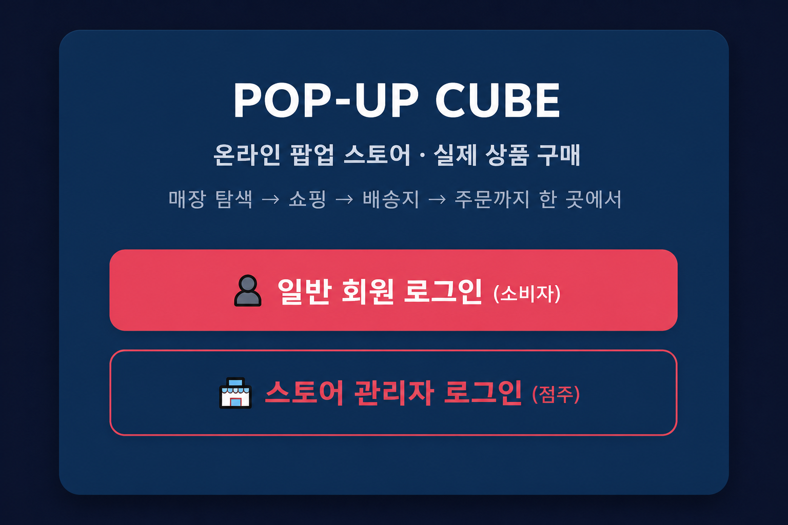
오프라인 팝업은 분위기가 좋지만, 기간과 장소가 짧고, 멀리 사는 사람은 오기 어렵습니다. 반대로 일반 쇼핑몰은 편하지만 「팝업에 와 본」 느낌이 약합니다.
| 오프라인 팝업만으로 아쉬운 점 | 플랫폼 방식 |
|---|---|
| 기간·장소가 한정됨 | 링크로 언제든, 어디서든 입장 |
| 줄 서기, 이동 부담 | 집에서도 매장을 「들어가」 구경 |
| 한 번 가본 사람 중심 | 다시 들어오고, 다른 사람과 같이 볼 수 있음 |
| 자사몰은 상품 목록 위주 | 공간·진열·이벤트까지 있는 「팝업」 느낌 |
| 가상세계만 있으면 실물 판매와 멀어짐 | 구경한 뒤 실물 주문·배송까지 한곳에서 |
| 일반 쇼핑몰 | 게임형 가상세계 | 플랫폼 | |
|---|---|---|---|
| 핵심 | 빨리 구매 | 공간에서 놀기 | 들어가 보고, 실물도 삼 |
| 매장 | 상품 목록 | 맵 제작이 무거움 | 점주가 팝업 공간을 꾸밈 |
| 이벤트 | 쿠폰 | 게임 패스 | 구매 후 할인 또는 사은품(선택) |
로그인하면 지금 열려 있는 여러 팝업이 보입니다. 한 개짜리 가게 앱이 아니라, 여러 브랜드 팝업이 같은 플랫폼에 올라와 있는 형태입니다. 카드를 누르면 매장 정보를 보고, 「입장하기」로 그 팝업 안으로 들어갑니다.
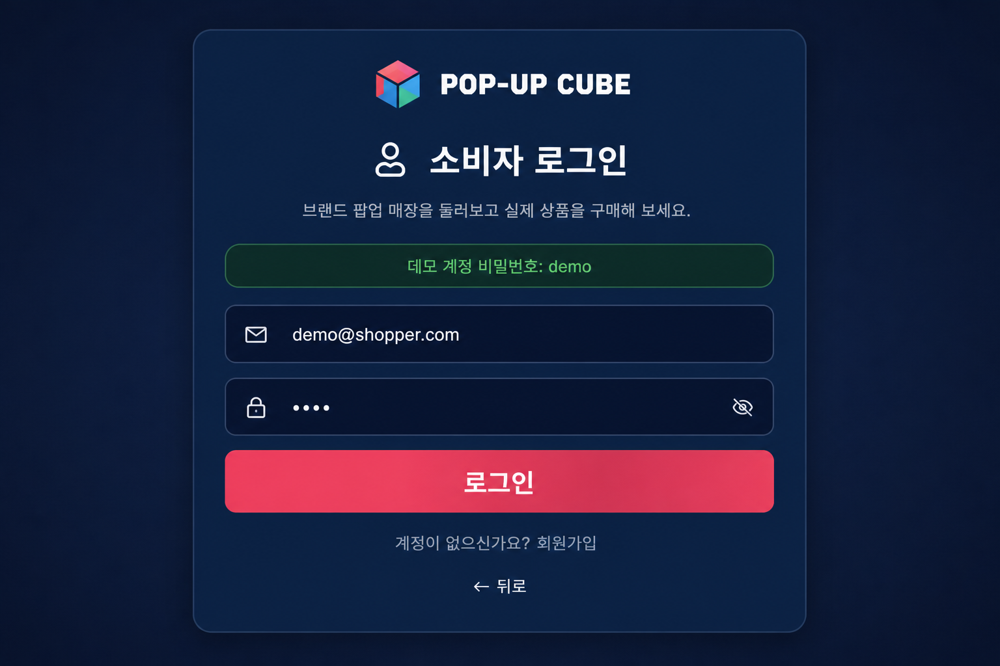
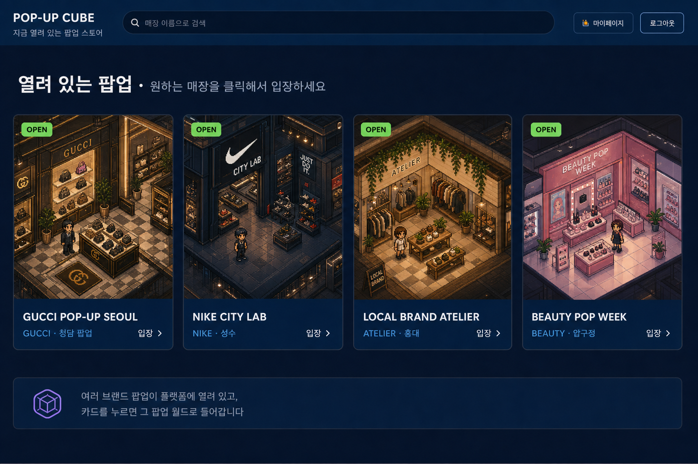
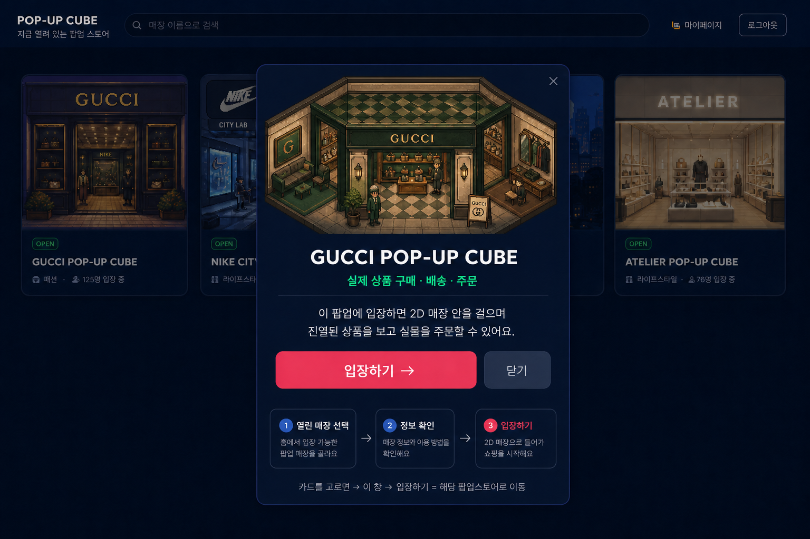
들어가면 2D로 그린 매장이 나옵니다. 캐릭터로 이동하고, 다른 손님과 채팅할 수 있습니다. 화면 아래에는 자주 쓰는 버튼만 둡니다.
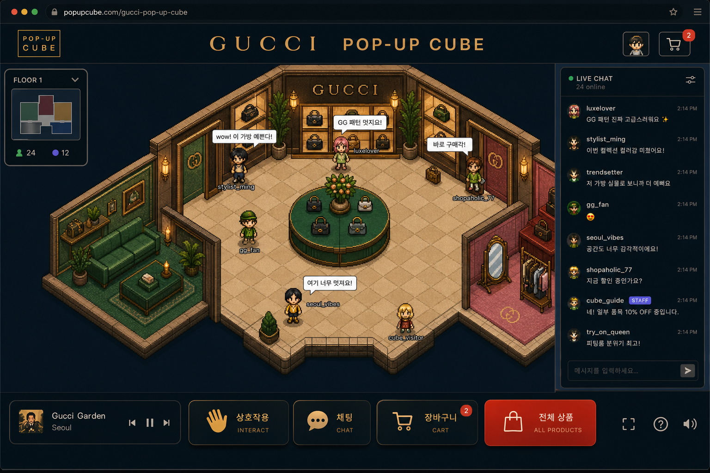
오프라인처럼 테이블이나 옷걸이 앞에 서서 상호작용하면, 그 위에 올려둔 상품만 뜹니다. 상품을 고른 뒤 장바구니 담기 → 바로 구매 → 착용해보기 순으로 누를 수 있습니다. (착용해보기는 아바타에 끼워 미리 보는 기능입니다.)
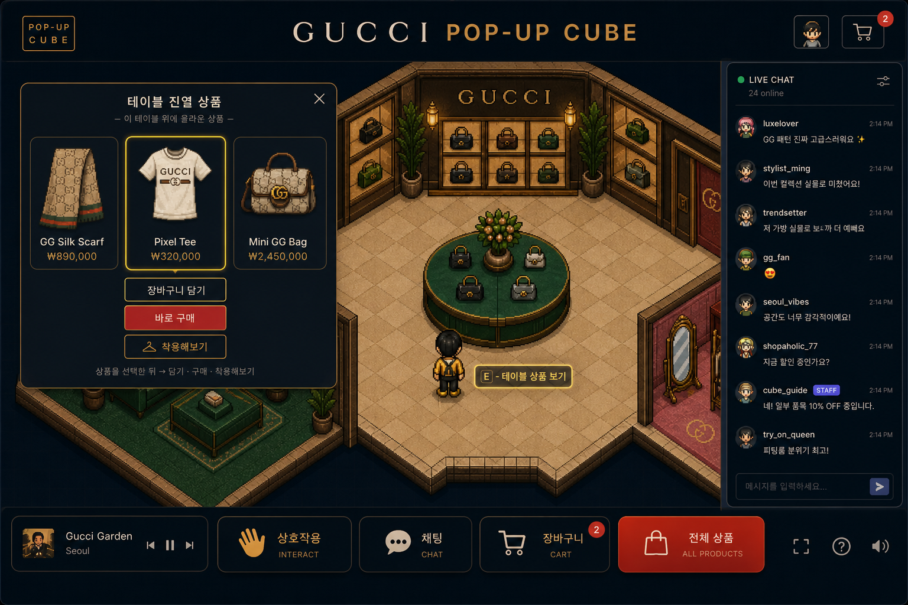
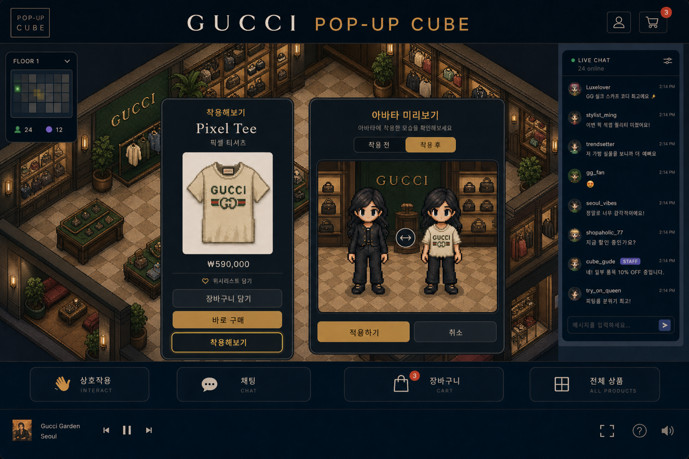
여기서 강조하고 싶은 것은 「게임이 아니라 쇼핑몰처럼 산다」는 점입니다. 상품을 담고, 배송지를 넣고, 주문이 남습니다.
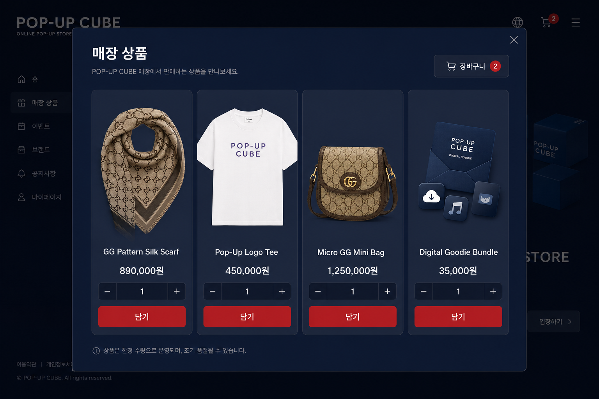
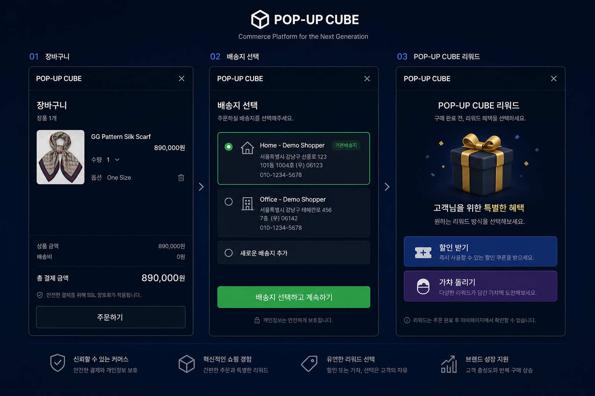
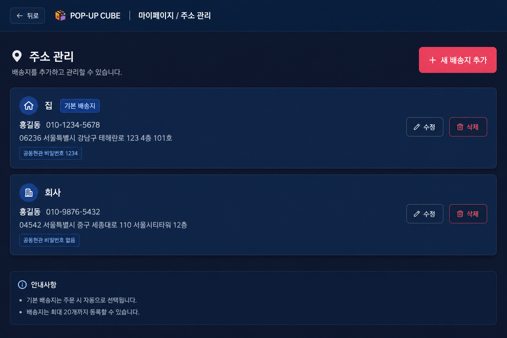
실물 결제가 끝난 뒤, 손님은 혜택 형태만 고릅니다.
점주는 팝업을 열고, 상품을 올리고, 매장 안 2D 진열(테이블·옷걸이 등)에 상품을 배치하며, 들어온 주문을 확인합니다. (3D로 만드는 계획은 없습니다.)
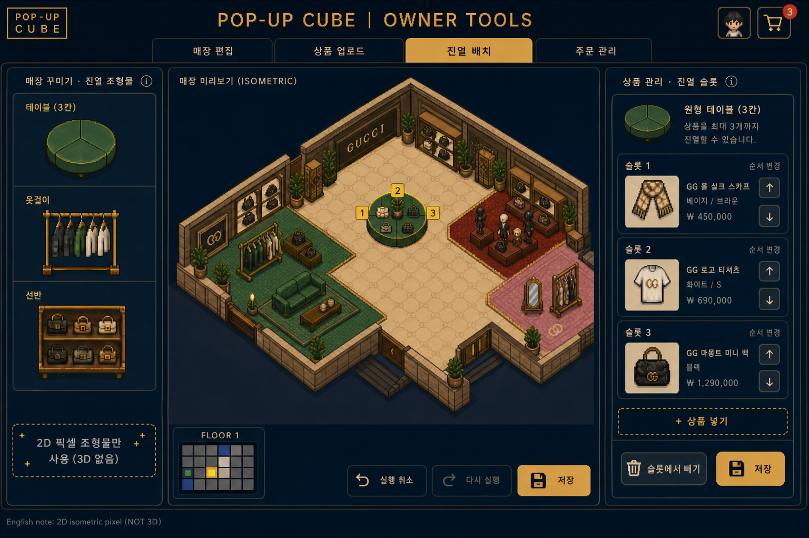
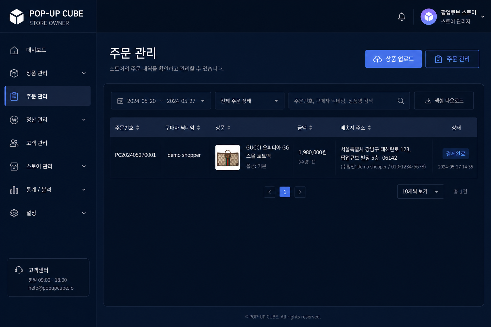
이미 웹으로 손님·점주 흐름의 뼈대는 동작합니다. 아래는 보기 쉽게만 정리한 것입니다.
| 구분 | 지금 | 앞으로 |
|---|---|---|
| 손님·점주 로그인, 홈 | 동작 | 소셜 로그인 등 보강 |
| 매장 안 이동·채팅 | 일부 동작 / 시안 병행 | 동시 접속·안정화 |
| 상품·장바구니·배송지·주문 | 동작 | 실제 결제사·물류 연결 |
| 구매 후 할인/사은품 선택 | 동작 | 점주가 직접 이벤트 설정하는 화면 |
| 테이블 앞 진열·착용해보기 | 시안으로 방향 확정 | 매장과 바로 연결해 완성 |
| 점주 진열 꾸미기 | 시안 | 점주 도구로 구현 |
| 항목 | 설명 |
|---|---|
| 입점·이용료 | 매장을 열고 운영하는 비용 (월 이용 등) |
| 거래 수수료 | 실물 판매액의 일부 (결제 연동 후) |
| 브랜드 팝업 패키지 | 기간 한정 팝업을 기획·제작·운영해 주는 형태 |
| 프로모션 | 브랜드가 사은품·할인 이벤트를 돌릴 때 |